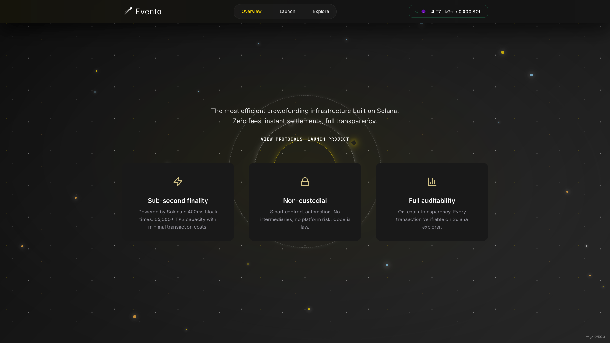

Abstract — Buying or funding an event ticket today is often messy:
fragmented platforms, mandatory accounts, hidden fees, and long settlement times.
Evento removes all of that.
It’s a wallet-native platform for event ticketing and crowdfunding, built directly on Solana.
Users connect their Phantom wallet, approve a single transfer, and they’re done —
no sign-ups, no intermediaries, no delays.
v1 runs on a simple SystemProgram.transfer for instant, verifiable payments.
v2 will add an Anchor-based escrow for refunds and NFT tickets via Metaplex for provable, transferable access.
The goal: a trust-minimised UX that organizers and attendees actually need —
sign locally, settle instantly, and cut out all the friction of Web2 ticketing.

Evento Web3 ticketing dashboard with wallet-native checkout and Solana analytics.
Deliver a wallet-first event experience — today users must create accounts, share PII, and pass through payment processors. With Evento it’s connect → approve → done.
Prefer static hosting (CDN) — traditional platforms hold card data and user tables (breach risk + ops). Evento serves static assets; the wallet is the trust boundary.
Start with direct SOL transfers — instant settlement (no chargebacks, no T+7 payouts). Add programs only when they solve real gaps (escrow, ticket identity).
2. On-chain vs Off-chain Boundary
Concern
Lives On
Why (Problem → Solution)
Payment
On-chain (SOL transfer)
Chargebacks & payout delays → replaced by final, transparent settlement; organizers are paid instantly, attendees get an explorer-proof.
Ticket identity (v2)
On-chain (NFT metadata)
Counterfeits & scalping → verifiable ownership, optional transfer rules; simple at the door: “scan wallet, verify mint.”
Event metadata
Off-chain (static JSON / API)
Frequent edits shouldn’t cost rent → organizers update titles/times cheaply; no chain bloat for content.
Receipts / stats
Off-chain (optional indexer)
Analytics & pagination without RPC strain → append-only receipt store; not a trust anchor.
3. Web3-First Architecture
Figure 1 — UI talks directly to the cluster. Backend is an optional indexer/receipt store, not a trust anchor.
Figure insight Keep trust at the wallet boundary. If you add a server, make it append-only for receipts and easy to ignore.
4. Wallet & Transaction Flow
// 1) Connect wallet
const provider = window.solana; // Phantom
await provider.connect(); // user approval
const connection = new solanaWeb3.Connection("https://api.devnet.solana.com", "confirmed");
// 2) Build payment
const from = provider.publicKey;
const to = new solanaWeb3.PublicKey(organizerPubkey);
const lamports = Math.floor(priceSOL * solanaWeb3.LAMPORTS_PER_SOL);
const ix = solanaWeb3.SystemProgram.transfer({ fromPubkey: from, toPubkey: to, lamports });
// 3) Fresh blockhash (replay-safe)
const { blockhash, lastValidBlockHeight } = await connection.getLatestBlockhash();
// 4) Sign & send
const tx = new solanaWeb3.Transaction({ feePayer: from, recentBlockhash: blockhash }).add(ix);
const signed = await provider.signTransaction(tx);
const sig = await connection.sendRawTransaction(signed.serialize(), { skipPreflight: false });
// 5) Confirm and surface the explorer link
await connection.confirmTransaction({ signature: sig, blockhash, lastValidBlockHeight }, "confirmed");
showExplorerLink(sig);
Why this matters — No custodial keys, no server-side signing, no opaque payment processor. Users approve exactly one transfer they can verify in any explorer.
Impact — Legacy platforms take 10–15% fees and delay payouts. Evento settles immediately to the organizer’s wallet; the signature is public proof.
5. Solana Pay QR Deep Link
For mobile or kiosk flows, generate a Solana Pay URL and render it as a QR code. Wallets parse the URL and pre-fill the transfer.
const params = new URLSearchParams({
recipient: organizerPubkey, // base58
amount: priceSOL.toString(), // decimal SOL
label: "Evento Ticket",
message: `Event: ${eventTitle}`,
memo: `evt:${eventId};tier:${tierName}`
});
const url = `solana:${organizerPubkey}?${params.toString()}`;
// Render as QR with your preferred lib (e.g., qrcode.js)
Note Include a concise memo to tie wallet history to a specific event/tier without leaking PII.
6. Security & Correctness
Replay-safe: always fetch a fresh blockhash and pass lastValidBlockHeight to confirmation.
Destination integrity: show full pubkey, chunk it (e.g., 4-4-4-…), provide copy-to-clipboard; never let a server rewrite it.
Idempotence (if you index): de-dupe by signature; enforce a unique index on sig.
No pre-signed payloads: users must sign on device; avoid “click to pay” with hidden signatures.
No PII storage: static frontend + wallet flow means no emails/passwords to breach.
Cluster choice: expose devnet/mainnet switch; show price in SOL and fiat at render time.
7. UX for Failure Modes
User rejects → keep state, show “Try again”, no hard errors.